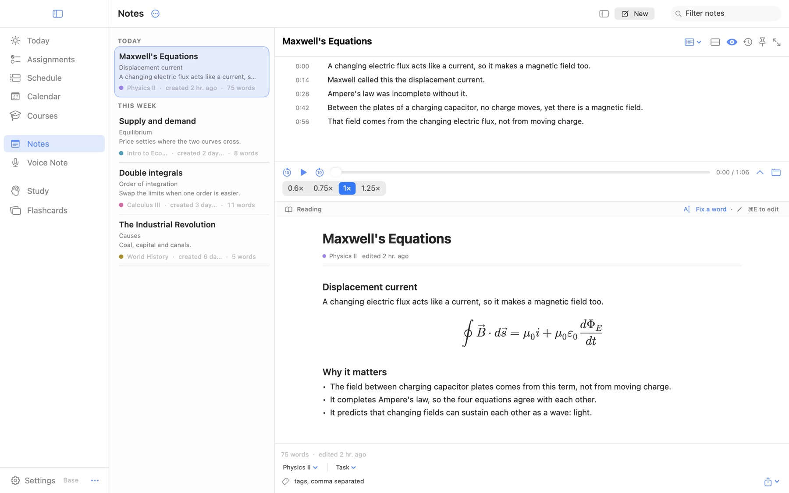
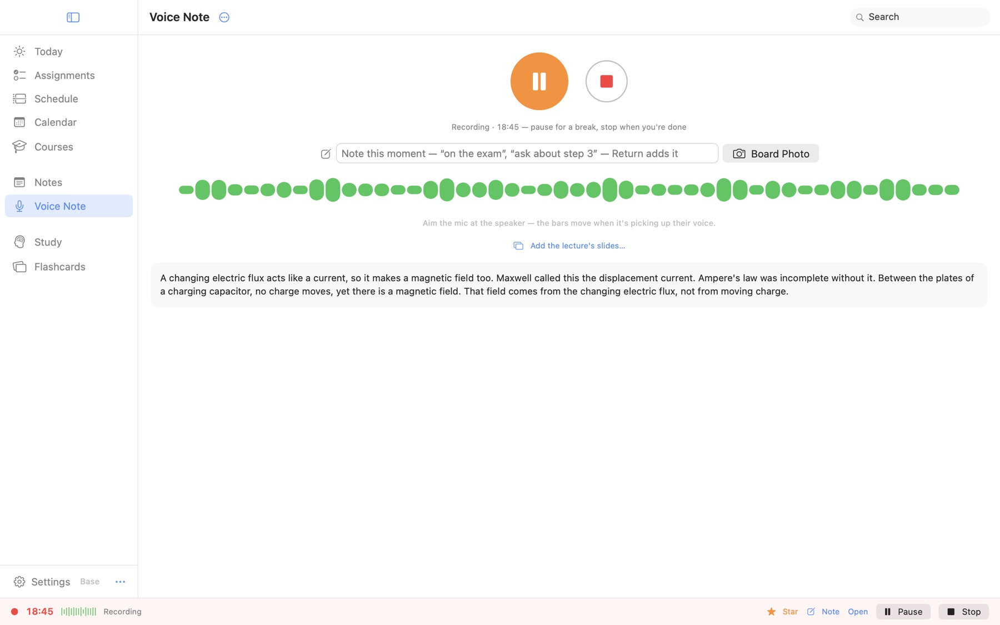
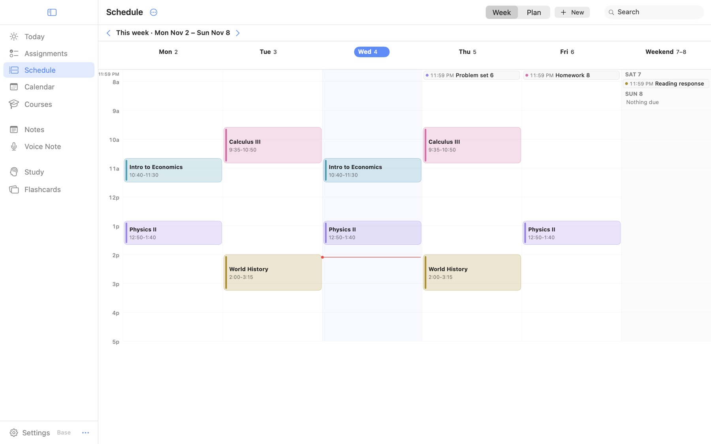
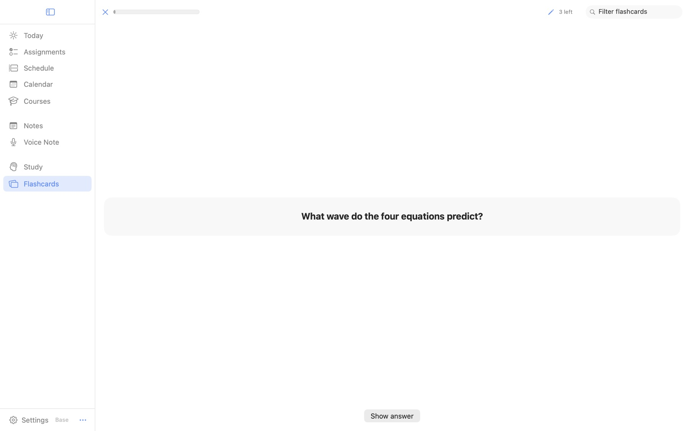
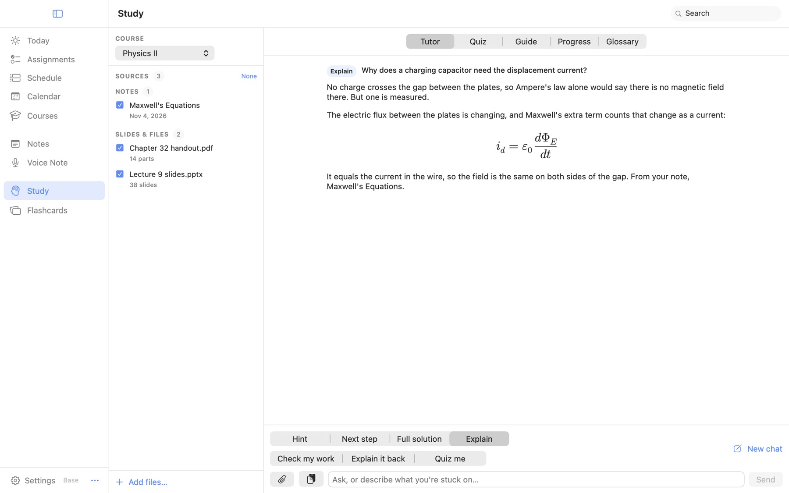

Lecture recorder and study app for Mac
Record class on your Mac and read the whole lecture back later.
Rostrum writes the lecture down while your professor talks. Afterward you have notes you can fix up, and when the exam gets close you can turn them into flashcards and practice quizzes.
Download for MacOr with Homebrew: brew install --cask hqn07/rostrum/rostrum
Free · Apple silicon, macOS 14 or later · No account · Version 3.6.0





Notes from the lecture, with the recording under them so you can replay any part. Sample content.
What’s in it
- Transcription runs on your Mac while you record. Your audio never leaves it.
- Notes in Markdown, with math, tables, checklists and spell check.
- Courses with class times, due dates and grades. You can set up next term before it starts.
- Paste your Canvas calendar link once and due dates keep themselves up to date.
- Flashcards from any note, with spaced review.
- Quizzes and study guides built from your own notes and slides.
- AI is optional. With your own ChatGPT or Claude key, heavy use costs a few cents a day (I spent $0.43 in a month). Apple’s on-device model and Ollama are free and send nothing out.
- Everything is saved on your Mac. What gets sent, and when.